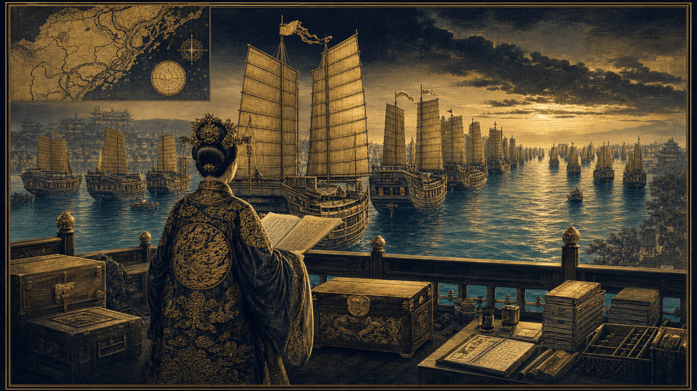
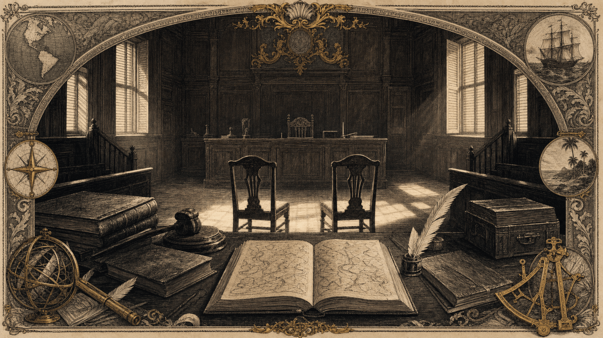
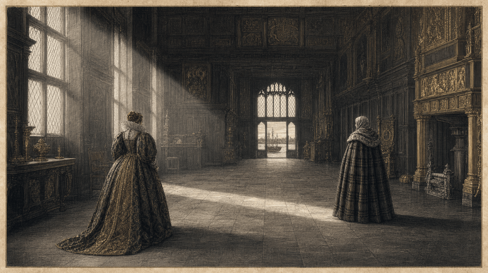
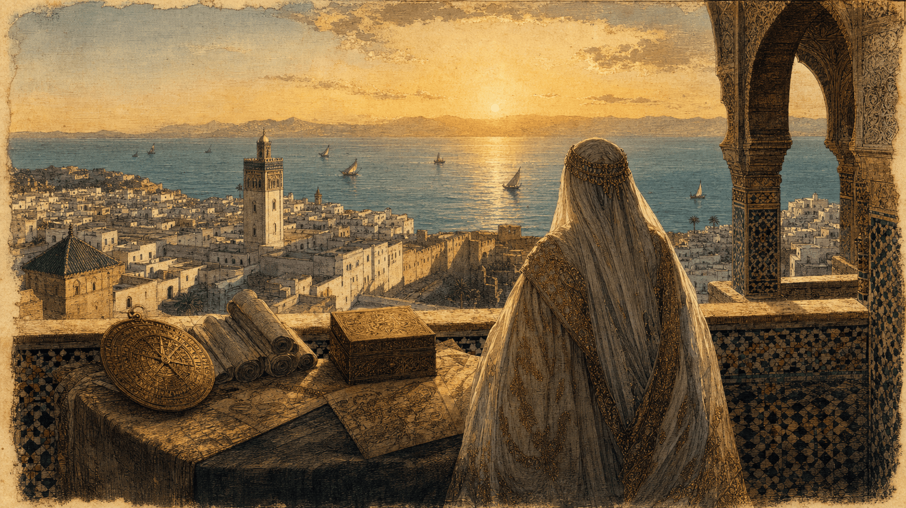
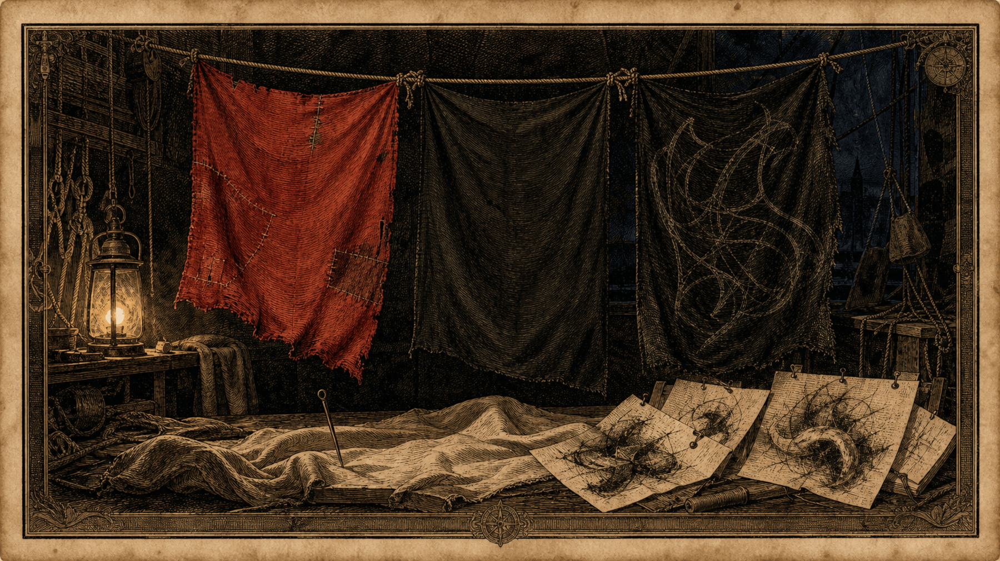
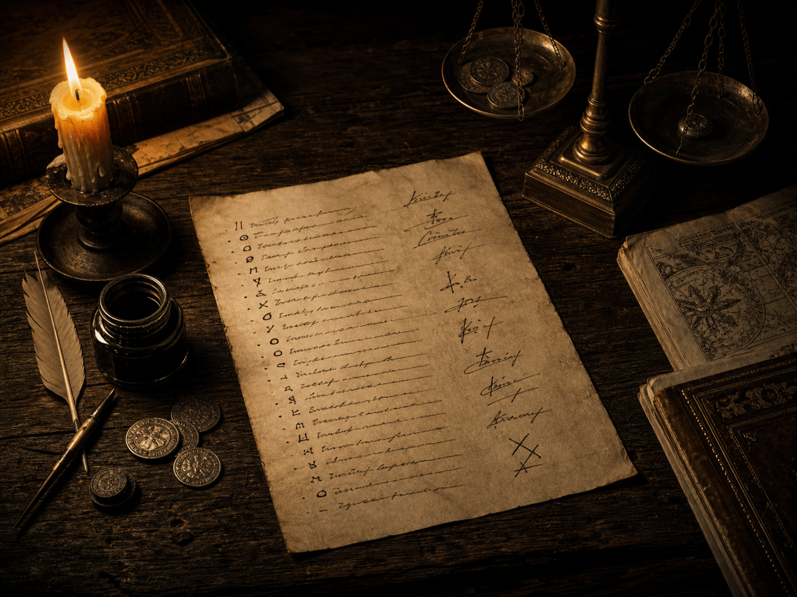

La Contre-Intox, entre mythe, droit et diplomatie. Des femmes qui ont régné sur les mers, cinq figures qui ont fait la légende — et, derrière le cache-œil d'Épinal, des codes écrits, des procès, des amnisties négociées et de la diplomatie de haut niveau.
« L'histoire ne se répète pas, elle s'écrit et trop souvent, elle a été écrite par ceux qui avaient intérêt à faire oublier la complexité de ceux qu'ils nommaient "pirates". »
Le pirate n'est pas un chaos. C'est un statut juridique — et presque toujours celui que l'ennemi vous attribue.
Ce dossier conserve mot pour mot les deux déroulés du live consacré à la piraterie : la galerie des femmes pirates conduite par Lalie, puis la déconstruction des clichés et la galerie des grands noms préparée par Ymir et Phantom. Entre les deux, une seule question : que reste-t-il du pirate quand on remplace la légende par l'archive ?
Sayyida al Hurra gouverne Tétouan et fait de la course un instrument d'État.
Grace O'Malley négocie avec Élisabeth Ire, à Greenwich, en latin.
L'« âge d'or » : Barbe Noire, Bonny et Read, Bartholomew Roberts, La Buse.
Ching Shih commande une flotte immense, puis négocie son amnistie avec l'Empire.
Objectifs pédagogiques
Passer du cache-œil au dossier d'archives — et voir apparaître du droit là où l'on nous vend du chaos.
Déconstruire
Le cache-œil, la carte au trésor, la planche, l'accent « Arrr » : d'où viennent réellement les clichés, et qui les a fabriqués — souvent le cinéma, parfois un seul acteur.
Lire l'archive
Presque tout ce que nous savons vient de leurs adversaires : minutes de procès, correspondances de gouverneurs, chroniques de vainqueurs. Savoir d'où parle une source, c'est déjà de la méthode.
Décentrer
Code de lois, chasse-partie signée, lettres de marque, amnisties négociées, rançons arbitrées par des ordres religieux : la piraterie comme droit, logistique et diplomatie.
Atlas hydrographique · interactif
Cinq mers, onze figures, quatre siècles
Choisissez un théâtre pour ouvrir son journal de bord. Les côtes suivent les données géographiques Natural Earth ; les halos indiquent des zones d'activité, non des frontières.
VthéâtresXIfiguresIVsiècles
Fond géographique : Natural Earth, domaine public · Repères historiques vérifiés dossier par dossier. Consulter l'appareil critique →
Partie I · Le live de Lalie
Les Femmes Pirates
« Des femmes ont régné sur les mers, ont commandé des milliers d'hommes, ont négocié avec des reines et ont imposé leurs propres lois. » Quatre biographies, une méthode : faire la part des choses entre ce que disent les sources et la légende qu'on nous a vendue.
Introduction
« Bienvenue à tous dans notre Agora. »
01
Au micro
Bienvenue à tous dans notre Agora, oui j'aime bien ce mot depuis nos précédent lives.En toute honnêté les jeux vidéos et moi ça fait quatorze mais les deux amis qui sont avec moi surtout Ymir et soutenu par Phantom ont fait des pieds et des mains pour en parler. Vous n'imaginez même pas. Et il va falloir que je canalise ces deux-là pour ce live. Sinon, je ne pourrais pas parler une minute. Mais j'avoue que j'ai joué le jeu et c'était fort intéressant .
Hier, nous étions plongés dans la sortie de Civilization VII, et en voyant la figure de Sayyida al Hurra intégrée au jeu, une question nous a frappés : pourquoi notre imaginaire collectif est-il si fasciné par la piraterie, tout en étant si déconnecté de sa réalité historique ? Entre le cache-œil d'Épinal et la vérité des archives, il y a un monde. Aujourd'hui, avec tout le collectif de L'Empire Contre-Intox, nous ne sommes pas là pour vous raconter des histoires, mais pour déconstruire les mythes. Nous allons fouiller les archives pour révéler que la piraterie fut, bien souvent, une affaire de droit, de logistique et de diplomatie de haut niveau, bien loin du simple chaos romantique que nous vendent le cinéma et les jeux vidéo.
Alors, vous êtes prêts pour l'aventure ?
Et comme Ymir et Phantom sont des galants gentilhommes, ils vont me laisser bien me laisser parler de gentes dames qu'étaient les Femmes Pirates.
N'est ce pas messieurs ?
Réalisé parLalie, Ymir & Phantom
PARTIE LALIE
LES FEMMES PIRATES
02
Vous connaissez tous l'image d'Épinal du pirate : le cache-œil, la jambe de bois, le perroquet sur l'épaule... et surtout, une figure exclusivement masculine. »
Pourtant, dès qu'on gratte un peu la surface, dès qu'on va chercher dans les archives plutôt que dans la fiction, une tout autre réalité émerge. Des femmes ont régné sur les mers, ont commandé des milliers d'hommes, ont négocié avec des reines et ont imposé leurs propres lois.
Mais attention, ici, on ne fait pas juste du "raconte-moi une histoire". Aujourd'hui, notre démarche est épistémologique. Nous voulons comprendre comment ces vies ont été documentées, comment elles ont été déformées par le regard de leurs contemporains, et surtout, comment le mythe s'est construit autour de leurs actes.
Nous allons explorer ensemble les biographies de quatre femmes exceptionnelles. De la gestionnaire implacable des côtes chinoises à la souveraine en exil en Méditerranée, en passant par les rebelles des Caraïbes et la cheffe de clan irlandaise.
On va donc faire la part des choses entre ce que les sources nous disent réellement et la légende qu'on nous a vendue. Bienvenue dans notre Agora, installez-vous, le voyage commence.
Question au public
D'ailleurs, dans le chat, avant qu'on commence, est-ce que vous avez des noms de femmes pirates qui vous viennent en tête, ou est-ce que, comme nous, vous avez l'impression que l'histoire les a effacées ?
Le problème de méthode
Comment fait-on la différence entre la réalité historique et la légende populaire quand ces femmes ont été principalement documentées par leurs ennemis ?" (Par exemple, les témoignages sur Bonny et Read proviennent de leurs procès, où la question de leur féminité était instrumentalisée
Mer de Chine méridionale
Ching Shih (Zheng Yi Sao)
03
La Stratège de la Mer de Chine

Une flotte qui ressemble à une administration plutôt qu'à une horde : registres, sceaux, coffres et certificats de sauf-conduit. C'est le vrai sujet de Ching Shih.
Fiche d'identité
Ching Shih (Zheng Yi Sao)Cheffe de flotte
Période
1775–1844 (Apogée : 1807–1810).
Zone
Mer de Chine méridionale.
Statut
Cheffe de la Flotte des Drapeaux Rouges.
Héritage
Créatrice d'un code de lois maritime parmi les plus stricts de l'histoire.
Biographie : Issue d'un milieu modeste, elle accède au pouvoir en 1807 à la mort de son mari pirate. Loin de s'effacer, elle prend les commandes d'une flotte qui comptera jusqu'à 1 500 navires. Elle est avant tout une administratrice hors pair : elle instaure un système de taxation des villages côtiers, garantissant une protection en échange de vivres. Son génie réside dans son code de lois : tout pillage non autorisé ou acte de désobéissance était puni de décapitation. Lorsqu'elle comprend que les puissances impériales chinoises, britanniques et portugaises ne peuvent la vaincre par la force, elle négocie une amnistie en 1810. Elle obtient le droit de conserver ses richesses, finit ses jours paisiblement en tenant une maison de jeu, démontrant que la piraterie peut être une gestion souveraine.
1. Le contexte géopolitique : Un empire en fragilité
Au début du XIXe siècle, la dynastie Qing traverse une période de déstabilisation majeure.
Instabilité interne : La révolte du Lotus blanc (commencée en 1796) mobilise les ressources militaires de l'Empire, créant un "vide sécuritaire" sur les côtes.
La montée des tensions sino-occidentales : Le système de Canton, qui restreint le commerce extérieur, crée des frictions avec les puissances européennes (Britanniques, Portugais). Les pirates, en rackettant les navires marchands et en menaçant Canton, se retrouvent au cœur d'un échiquier où ils traitent directement avec les autorités locales, les marchands et les puissances étrangères.
2. L'aspect technique de la flotte : La "Bataille de la Gueule du Tigre" (1809-1810)
C'est un moment charnière pour votre récit, illustrant la confrontation entre une "horde" pirate et une marine impériale assistée par les Occidentaux.
L'événement : Entre septembre 1809 et janvier 1810, une coalition composée de la marine Qing et de la flotte portugaise (basée à Macao) tente de bloquer la flotte pirate dans le détroit du Humen (la "Gueule du Tigre").
Le déséquilibre technique :
Les navires : Les jonques pirates sont agiles et capables de naviguer dans les eaux peu profondes, là où les frégates portugaises (plus lourdes et dotées d'une artillerie de plus gros calibre) ne peuvent pas les suivre.
La tactique : Les Portugais, commandés par José Pinto Alcoforado de Azevedo e Sousa, utilisent le vent pour rester "au vent" (windward), empêchant ainsi les pirates de les encercler et de les aborder, ce qui était la tactique favorite des pirates chinois.
Résultat : Malgré des pertes lourdes, la flotte de Ching Shih ne capitule pas militairement. C'est l'échec de cette coalition à détruire totalement l'organisation qui pousse l'Empereur à proposer une amnistie négociée.
3. Les détails du "Code" : Une bureaucratie de la violence
Le code de 1807 est l'outil technique qui a transformé des bandes éparses en une "entreprise". Ces points sont important pour illustrer comment elle a instauré une discipline quasi étatique :
Répartition des richesses : Aucun pirate n'était propriétaire de son butin. Tout devait être remis aux autorités de la flotte qui redistribuaient les parts. Cela créait une dépendance financière au système de Ching Shih.
Protection des captifs : Ses règles sur les captives féminines étaient révolutionnaires pour l'époque : le viol était puni de mort, et le mariage forcé devait être suivi d'une fidélité stricte sous peine de décapitation.
L'économie de la protection : Elle ne se contentait pas de piller ; elle taxait les villages côtiers et les navires marchands, agissant comme un pouvoir souverain parallèle qui offrait une "assurance" contre les autres groupes pirates moins organisés.
Question au public
Le fait qu'elle ait imposé un code de loi aussi strict, comparable à celui d'une marine nationale, fait-il d'elle une pirate ou une chef d'État en guerre contre l'Empire ?
"Le Mythe vs La Réalité" référence Pop Culture
Vous avez probablement vu Ching Shih dans Pirates des Caraïbes. C'est une figure iconique, n'est-ce pas ? Mais si on oublie le décorum hollywoodien et qu'on regarde les archives de 1809, on découvre une gestionnaire si efficace que l'Empereur a dû négocier avec elle comme avec un chef d'État étranger. C'est ça, la vraie 'Contre-Intox' : remplacer la légende par la donnée brute.
Ching Shih vs Pirates des Caraïbes
La référence : Le personnage de la Seigneur Pirate Mistress Ching dans Pirates des Caraïbes : Jusqu'au bout du monde.
Le contraste : Dans le film, elle est une figure mystérieuse et légèrement caricaturale, intégrée à une assemblée internationale.
Votre "Contre-Intox" : "Si le film nous montre une pirate parmi d'autres, la réalité est bien plus impressionnante : Ching Shih n'était pas juste une membre d'un conseil, elle était l'Empire à elle seule. Sa flotte était plus puissante que la plupart des marines nationales de l'époque. On est loin de la cabine de capitaine du Black Pearl, on est dans la gestion d'une bureaucratie militaire complexe."
Maintenant que nous avons vu comment une femme peut bâtir un empire maritime par une gestion administrative implacable, quittons les grandes flottes de la Mer de Chine pour rejoindre les Caraïbes, là où la survie ne se jouait pas dans les palais impériaux, mais dans les salles d'audience coloniales avec Anne Bonny et Mary Read.
Caraïbes · Âge d'or
Anne Bonny et Mary Read
04
Les Rebelles des Caraïbes

Tout ce que nous savons d'Anne Bonny et de Mary Read sort de cette pièce : les minutes du procès de novembre 1720, imprimées à la Jamaïque en 1721.
Fiche d'identité
Anne Bonny & Mary ReadÉquipage Rackham
Période
1698–1721.
Zone
Caraïbes (Âge d'or de la piraterie).
Statut
Pirates au sein de l'équipage de John "Calico Jack" Rackham.
Signe particulier
Subversion des normes de genre par le travestissement.
Biographie : Leur histoire est celle de femmes ayant refusé les carcans de leur époque. Anne Bonny, fille illégitime à l'esprit indomptable, et Mary Read, élevée en garçon pour survivre et hériter, se rencontrent sur le navire de Rackham. Elles se distinguent par une férocité au combat qui sidère leurs contemporains. Lors de l'arrestation de leur équipage en 1720, elles sont les seules à défendre vaillamment le navire alors que les hommes sont en état d'ébriété. Condamnées à la pendaison, elles invoquent le droit de "ventre plaidé" (grossesse) pour surseoir à leur exécution. Ce geste juridique souligne la complexité de leur statut : hors-la-loi par leurs actes, mais protégées par des mécanismes légaux qu'elles ont su utiliser.
Pour leur portrait, l'aspect technique majeur est le cadre juridique qui leur a permis d'échapper à la potence.
Le mécanisme juridique : Au XVIIIe siècle, dans le droit anglais, une femme condamnée à mort pouvait invoquer le statut de pregnant woman pour obtenir un sursis.
La procédure : Ce n'était pas une simple déclaration. Un jury de femmes (généralement des matrones) était constitué pour examiner la condamnée. Si elles confirment la grossesse ("quick with child"), l'exécution est suspendue jusqu'à l'accouchement.
Pourquoi c'est technique : Cela montre que le système judiciaire colonial, bien que rigide, possédait des failles intégrées pour protéger la "vie potentielle". Anne Bonny et Mary Read ont utilisé une loi conçue pour protéger les femmes "honnêtes" pour sauver leur peau de pirate.
Donnée historique : Si Mary Read est morte en prison peu après son procès (probablement d'une fièvre), Anne Bonny, elle, a disparu des registres. La spéculation technique demeure : a-t-elle été graciée officiellement ou a-t-elle réussi à s'évader grâce à la complicité de son père influent ?
"Le Mythe vs La Réalité" référence Pop Culture
La référence : La série Black Sails, qui explore le réalisme sombre de l'âge d'or de la piraterie.La fiction adore les mettre en scène comme des rebelles romantiques en quête d'aventure ou liées par une passion tragique. Mais techniquement, leur survie devant la justice coloniale ne doit rien au destin : elles ont utilisé le Pleading the belly, une règle de droit précise, pour stopper la machine judiciaire. Elles n'étaient pas seulement des combattantes, elles étaient des juristes de l'instinct de survie. »
Si Anne et Mary ont utilisé les failles juridiques pour échapper à la potence dans les Caraïbes, notre prochaine figure, elle, a choisi de redéfinir les règles du jeu foncier en Irlande, prouvant que la piraterie peut être un outil de haute diplomatie. Place à la Reine des Clans, Grace O'Malley.
Connacht, côte ouest d'Irlande
Grace O'Malley (Gráinne Mhaol)
05
La Reine des Clans

Greenwich, septembre 1593. Ni révérence ni combat : deux autorités qui se mesurent. La langue de l'entretien, elle, n'est attestée par aucune source contemporaine.
Fiche d'identité
Grace O'Malley (Gráinne Mhaol)Cheffe de clan
Période
1530–1603.
Zone
Côte ouest de l'Irlande (Connacht).
Statut
Cheffe de clan, navigatrice et cheffe de guerre.
Signe particulier
Diplomatie de haut niveau avec la Couronne anglaise.
Biographie : Née dans le clan des O'Malley, réputé pour sa maîtrise de la navigation, Grace ne s'identifie pas comme pirate, mais comme cheffe de territoire. Elle consacre sa vie à protéger les terres ancestrales de l'expansion anglaise. Figure incontournable, elle a mené une véritable carrière de cheffe de guerre navale pendant des décennies. Son moment le plus saisissant est sa rencontre à Greenwich en 1593 avec Élisabeth Ière. Dans un échange en latin, Grace négocie la libération de sa famille. Sa trajectoire illustre la frontière floue entre la résistance locale et la piraterie vue par l'occupant. Elle est le symbole de l'Irlande insoumise, décédée dans son lit après une vie de défi constant.
Ici, l'angle géopolitique est crucial. Grace O'Malley n'est pas qu'une pirate, elle est un acteur de la "Surrender and Regrant" policy irlandaise.
Le contexte technique : Dans l'Irlande du XVIe siècle, la Couronne anglaise tentait de convertir les titres fonciers gaéliques (collectifs) en titres de propriété anglais (individuels).
La stratégie de Grace : Elle a été l'une des rares à naviguer entre les deux systèmes. Lorsqu'elle rencontre Élisabeth Ière en 1593, elle ne vient pas mendier, elle vient signer un "Composition Agreement".
Le levier : Elle propose de mettre ses navires au service de l'Angleterre contre les ennemis d'Élisabeth (comme les Espagnols) en échange de la reconnaissance de ses droits territoriaux.
L'analyse : Ce n'est pas de la piraterie, c'est de la "corsaire privée". Techniquement, elle possédait des lettres de marque officieuses qui rendaient ses actes de capture "légaux" aux yeux de la loi anglaise, tant qu'elle servait les intérêts de la Couronne.
"Le Mythe vs La Réalité" référence Pop Culture
La référence : La série Game of Thrones, pour l'imaginaire des clans et des femmes de pouvoir qui défient les structures. On l'imagine souvent, comme une héroïne de fantasy, en reine barbare déconnectée des réalités. Mais Grace O'Malley est bien plus technique : elle ne cherchait pas un trône de fer, elle cherchait le Composition Agreement. Son vrai coup de maître n'est pas une bataille navale épique, mais son échange en latin avec Élisabeth Ière à Greenwich pour transformer son clan en institution reconnue. »
Si Grace O'Malley a utilisé la diplomatie foncière pour protéger son clan en Irlande, traversons l'Atlantique pour découvrir une figure qui a poussé la stratégie jusqu'à la mise en scène totale de sa propre identité : Jacquotte Delahaye. Elle nous prouve que dans un monde hostile, savoir disparaître pour mieux revenir est parfois la plus grande des victoires politiques.
Saint-Domingue · à la limite de la légende
Jacquotte Delahaye
06
La "Reine des Morts" des Caraïbes
Fiche d'identité
Jacquotte DelahayeFigure légendaire
Période
XVIIe siècle (vers 1660).
Zone
Saint-Domingue et les Caraïbes.
Statut
Pirate et cheffe de bande.
Signe particulier
Maîtrise de la mise en scène (falsification de sa propre mort).
Biographie : Fille d'un père français et d'une mère haïtienne, Jacquotte serait devenue pirate après l'assassinat de son père. Son histoire est marquée par une "technique" de survie peu commune : elle aurait simulé sa propre mort pour échapper à ses poursuivants, avant de réapparaître quelques années plus tard, devenant une cheffe redoutée sous le surnom de "Back from the Dead Red" (la rousse revenue d'entre les morts). Elle a commandé des centaines de pirates, participant à la défense de l'île de Saint-Domingue.
L'analyse technique (Pivot juridique/stratégique) : La vie de Jacquotte illustre le concept de "l'identité flottante" dans la piraterie du XVIIe siècle.
La falsification comme stratégie : Contrairement aux pirates qui cherchaient la célébrité, Jacquotte a utilisé la "mort symbolique" comme un outil de guerre psychologique et de protection juridique.
Gestion des ressources : Elle était experte dans l'art de créer des alliances changeantes entre les bandes de flibustiers et les populations locales haïtiennes pour garantir des refuges sécurisés.
Analyse : Son parcours montre comment, dans un monde sans État central fort (le "vide sécuritaire" des Caraïbes), le contrôle de l'identité était une ressource stratégique aussi importante que le nombre de navires.
"Le Mythe vs La Réalité" référence Pop Culture
L'imagerie du "pirate mort-vivant" ou du pirate mystique présente dans Pirates des Caraïbes (le Flying Dutchman ou les pirates maudits). La fiction adore le surnaturel et les pirates qui reviennent de l'au-delà pour hanter les mers. Mais la réalité est bien plus politique : Jacquotte Delahaye n'a pas utilisé la magie, elle a utilisé la désinformation. En simulant sa mort, elle a orchestré un changement d'identité stratégique pour échapper à la justice coloniale. Ce n'est pas une malédiction, c'est une technique de survie d'une efficacité redoutable pour une femme pirate dans un monde d'hommes. »
La démarche épistémologique
Comme les sources sur Jacquotte sont plus rares et parfois débattues par les historiens, c'est une excellente occasion d'insister sur ta démarche épistémologique : "Avec Jacquotte, nous sommes à la limite de la légende. C'est ici que le travail de l'historien est crucial : savoir déceler la réalité politique derrière la couche de mythe romantique.Avec Jacquotte Delahaye, nous touchons au cœur de notre travail : pourquoi avons-nous besoin de créer ces personnages ? Pourquoi le mythe est-il parfois plus puissant que l'archive ? En étudiant Jacquotte, nous n'étudions pas une femme pirate, nous étudions comment l'imaginaire pirate a besoin de figures féminines insaisissables pour survivre.
Jacquotte a su utiliser la désinformation comme un outil pour protéger son autonomie face aux autorités coloniales. Mais si elle a préféré disparaître pour survivre, notre prochaine figure, elle, a choisi de s'imposer en pleine lumière. Traversons maintenant la Méditerranée pour rencontrer la gouverneure de Tétouan, Sayyida al Hurra, qui a transformé le droit de la course en une véritable politique d'État.
Méditerranée occidentale · Tétouan
Sayyida al Hurra
07
La Souveraine en Exil

Tétouan. Elle ne courait pas les mers : elle les administrait depuis son siège de pouvoir. La course, ici, est un instrument de gouvernement.
Fiche d'identité
Sayyida al HurraGouverneure
Période
1485–1561.
Zone
Méditerranée occidentale (Tétouan).
Statut
Gouverneure de Tétouan et corsaire d'État.
Héritage
Usage de la course maritime comme outil diplomatique.
Biographie : Chassée de Grenade durant la Reconquista, elle transforme son traumatisme d'exilée en une force politique. Gouverneure de Tétouan, elle orchestre une guerre maritime contre l'Espagne et le Portugal. Contrairement aux pirates nomades, elle dirige ses opérations depuis son siège de pouvoir, avec une rigueur de cheffe d'État. Pour elle, la piraterie est un levier diplomatique pour protéger les intérêts du commerce musulman et influencer les rapports de force en Méditerranée. Durant trente ans, elle a régné en maître sur les routes maritimes, montrant que la piraterie, entre ses mains, était une extension légitime de sa souveraineté politique.
Sayyida al Hurra illustre parfaitement la professionnalisation de la guerre maritime en Méditerranée au XVIe siècle.
Le concept juridique : Sa pratique s'inscrit dans le cadre du Droit de la Course (Jihad al-Bahr). Ce n'est pas du vol, c'est une guerre économique légitimée par des décrets de gouvernance.
Gestion des rançons (Le système des Consuls) : Elle gérait des échanges de captifs complexes. Elle travaillait avec des intermédiaires (souvent des ordres religieux comme les Trinitaires ou les Mercédaires) qui négociaient le rachat des prisonniers chrétiens.
Géopolitique : Elle utilisait sa position de gouverneure de Tétouan pour établir un véritable corridor sécurisé en mer. Ses navires ne se contentaient pas d'attaquer ; ils escortaient les navires marchands alliés.
Le point technique : Elle a réussi à maintenir Tétouan comme une cité-État autonome, capable de traiter d'égal à égal avec les puissances européennes, tout en étant formellement sous la suzeraineté du sultan marocain. C'est un modèle rare de décentralisation étatique réussie.
"Le Mythe vs La Réalité" référence Pop Culture
La référence : L'univers d'Assassin's Creed et les récits sur les corsaires méditerranéens qui mettent en avant des figures solitaires ou mystérieuses. Quand on pense "femme pirate en Méditerranée", on imagine souvent un personnage d'infiltration qui évolue dans l'ombre.Mais Sayyida al Hurra, elle, ne se cachait jamais : elle était une gouverneure en costume d'apparat. Sa piraterie était un outil de diplomatie internationale, presque une extension de l'État : ce n'était pas de l'anarchie, c'était de la régulation de marché. »
En quittant Sayyida al Hurra, nous réalisons que le mot "pirate" est bien trop étroit pour définir ces femmes. Entre stratégie, droit, diplomatie et résistance, elles ont toutes, à leur manière, orchestré leur propre destin. Et maintenant, nous allons voir comment, dans l'Agora de notre collectif, nous pouvons nous approprier ces récits pour construire nos propres futurs projets.
Le cœur de la démarche
les sources sur ces femmes sont souvent des récits écrits par leurs adversaires ou des documents judiciaires. C'est là que réside le cœur de notre démarche épistémologique : montrer comment le "savoir" sur ces femmes est en réalité une construction historique que nous avons le devoir d'interroger ensemble.
Nous ne sommes pas là pour juger leurs actes selon notre morale actuelle, mais pour comprendre comment, à leur époque, ces femmes ont utilisé les failles ou les outils de leur système pour survivre et bâtir leur pouvoir.
Synthèse & mise en garde
« Ce serait un anachronisme. »
08
Quatre femmes, quatre systèmes juridiques retournés de l'intérieur :
Pirates
Pivot technique/juridique
Ching Shih
Code de Loi (gestion interne)
Bonny & Read
Pleading the Belly (droit pénal)
Grace O'Malley
Surrender and Regrant (droit foncier)
Sayyida al Hurra
Droit de la Course (diplomatie internationale)
Au micro
J'ai voulu comprendre ces femmes, leurs importances au sein de la communauté féminine. Ma première erreur a été de penser qu'elles pouvaient être des féministes avant l'heure et en faisant des recherches, c'est faux. Et voici pourquoi....
1. La distinction épistémologique (Le "Contre-Intox" sur le féminisme)
Au lieu de dire "ce sont des féministes", il faut expliquer qu'elles ont pratiqué une forme de liberté radicale sans avoir les mots pour la nommer.
Proposition de formulation : « On pourrait être tentés de les qualifier de "féministes" avec nos yeux d'aujourd'hui. Mais historiquement, ce serait un anachronisme. Elles n'avaient pas de revendications politiques sur "les droits des femmes" au sens moderne. En revanche, elles ont pratiqué une insoumission radicale : elles ont brisé les plafonds de verre de leur époque par la nécessité, la stratégie et la force. Elles ne cherchaient pas à changer la société pour les femmes en général, elles cherchaient à occuper des espaces de pouvoir qui leur étaient interdits. »
2. Le parallèle avec les époques
Je préfère mettre en parallèle leur "liberté" et le contexte de leur temps :
Le XVIe siècle (Grace, Sayyida) : La place de la femme est strictement définie par le lignage ou le mariage. Leur "féminisme de fait" est une autonomie clanique et politique : elles ont utilisé le pouvoir de leur nom et de leur rang pour commander des hommes, ce qui était la seule voie possible pour exister politiquement.
Le XVIIIe siècle (Bonny, Read) : C'est l'époque du rationalisme et des Lumières, mais aussi d'un patriarcat rigide. Leur "féminisme de fait" est une subversion du genre : elles ont dû "devenir des hommes" (travestissement) pour accéder à l'égalité de traitement en mer. C'est une critique structurelle de la société par l'action, pas par le discours.
Le XIXe siècle (Ching Shih) : La période est marquée par l'émergence des empires coloniaux. Son "féminisme de fait" est une autonomie administrative : elle a prouvé qu'une femme pouvait gérer une "entreprise" (la flotte) mieux que les structures masculines de l'Empire.
Avant de conclure, une question revient souvent : peut-on qualifier ces femmes de "féministes" ? Avec nos yeux d'aujourd'hui, la tentation est grande. Pourtant, historiquement, ce serait un anachronisme : ces femmes n'avaient pas de revendications politiques sur "les droits des femmes" au sens moderne, car ce concept n'existait tout simplement pas à leur époque.
En revanche, elles ont pratiqué une forme d'insoumission radicale. Elles n'ont pas cherché à changer la société pour les autres femmes, mais elles ont brisé les plafonds de verre de leur temps par la nécessité, la stratégie et la force, occupant des espaces de pouvoir qui leur étaient normalement interdits. Leurs vies ne sont pas des manifestes théoriques, ce sont des manifestes en actes
Elles ne portaient pas d'étendards féministes, mais leurs vies sont des manifestes en actes. Elles n'ont pas demandé la permission, elles ont pris leur place. Aujourd'hui, nous ne cherchons pas à les "féminiser" à tout prix, mais à reconnaître qu'elles ont inventé, bien avant nous, des formes de liberté et de gouvernance que l'histoire, écrite par leurs adversaires, a longtemps tenté d'effacer.
Appareil critique du live
Les Sources
09
PourChing Shih (Zheng Yi Sao) :
Yuan Yung-lun (1830) : Ching hai fen chi (Mémoires sur la pacification des pirates). C'est l'une des sources primaires les plus importantes, écrite par un contemporain qui a observé la montée et la chute de la flotte de Ching Shih.
Archives de la Compagnie des Indes orientales : Elles contiennent des rapports détaillés sur les attaques pirates et les négociations d'amnistie en mer de Chine.
Pour Anne Bonny et Mary Read :
Captain Charles Johnson (1724) : A General History of the Pyrates. Bien que romancé, c'est le texte fondateur de la légende. Pour votre approche "Contre-Intox", c'est la source idéale à confronter aux documents de justice.
Archives du tribunal de l'Amirauté de la Jamaïque (1720) : Les minutes officielles du procès de Calico Jack Rackham, Bonny et Read. C'est ici que vous trouverez les preuves techniques du Pleading the belly.
Pour Grace O'Malley (Gráinne Mhaol) :
State Papers (Archives de la Couronne anglaise) : Correspondances entre les gouverneurs irlandais (comme Sir Henry Sidney) et la Couronne concernant les activités des O'Malley.
Composition Agreements : Les documents officiels signés entre les chefs de clans irlandais et l'administration anglaise, qui servent de preuve technique à votre analyse foncière.
Pour Sayyida al Hurra :
Archives espagnoles et portugaises : Les documents diplomatiques des ports de Ceuta, Tanger et Gibraltar mentionnent souvent les activités de la gouverneure de Tétouan dans le cadre de la gestion des rançons et de la "Course".
Chroniques marocaines de l'époque : Textes relatant l'histoire des villes du Nord du Maroc et l'administration des chefs de cités après la Reconquista.
Le cas Jacquotte
Contrairement aux autres figures que nous avez traitées, dont l'existence est attestée par des archives administratives ou judiciaires précises, le cas de Jacquotte Delahaye se situe à la frontière de l'histoire et de la légende.
Le récit fondateur : La figure de Jacquotte Delahaye est principalement issue du livre A General History of the Pyrates (1724), attribué au Capitaine Charles Johnson. Bien que cet ouvrage soit la source la plus célèbre sur la piraterie du XVIIIe siècle, les historiens contemporains s'accordent à dire qu'il s'agit d'un mélange de faits réels, d'embellissements et de récits totalement fictifs.
La tradition orale : Son histoire s'appuie également sur des traditions orales et des récits folkloriques des Caraïbes qui ont été compilés par divers auteurs au XIXe et au XXe siècle. Il n'existe pas, à ce jour, de documents d'archives contemporains de sa vie (comme des registres paroissiaux, des procès ou des rapports de gouverneurs) qui permettent d'attester de son existence réelle avec une certitude absolue.
Conclusion de la partie I
« Le mot "pirate" est une étiquette bien trop étroite. »
10
Nous arrivons au terme de cette plongée dans les archives. En explorant ces destins, nous réalisons que le mot "pirate" est une étiquette bien trop étroite. Qu'il s'agisse de la gestion souveraine de Ching Shih ou de la diplomatie de Sayyida al Hurra, ces figures n'ont pas construit leur pouvoir par hasard, mais par la nécessité et la rigueur. Elles nous rappellent que le savoir historique est une construction, souvent écrite par leurs adversaires, et qu'il est de notre devoir de l'interroger sans cesse.
Aujourd'hui, au sein de cette Agora, nous avons déconstruit le mythe de la piraterie en révélant les mécanismes de pouvoir, de droit et d'organisation qui se cachaient derrière les légendes. Mais cette quête de vérité ne s'arrête pas là. Car si nous avons étudié comment ces femmes et ces hommes ont bâti des empires sur les mers, nous nous demanderons dimanche prochain comment un seul homme, à peine plus âgé, a réussi à redessiner la carte du monde connu en quelques années seulement. Avec Alexandre le Grand, nous poursuivrons cette même démarche : passer de la figure du "conquérant mythique" à l'analyse concrète de la logistique, de la stratégie militaire et de la gestion des cités-États de l'Antiquité.
Le voyage continue donc dès dimanche prochain. En attendant, nous vous attendons sur le Discord pour prolonger nos échanges et construire, ensemble, nos futurs projet ainsi que sur le site de L'Empire Contre-Intox.
Ymir, Phantom & Lalie
Partie II · Les fiches d'Ymir & Phantom
Les grands noms, et l'atelier du mythe
Le cache-œil, la carte au trésor, le Jolly Roger, la « démocratie » de bord — puis cinq portraits : le showman de l'enfer, l'espion dandy des bayous, le boucher sanguinaire, le puriste en veste rouge, et l'homme qui a lancé la plus grande chasse au trésor du monde.
La déconstruction
La Réalité vs Le Mythe
11
La Réalité vs Le Mythe (La Déconstruction)

À droite, le pavillon inachevé : les emblèmes que vous connaissez ont, pour la plupart, été dessinés au XXe siècle.
Les clichés de la Pop Culture : Le cache-œil (était-ce vraiment pour masquer un œil borgne, ou pour garder une vision nocturne en passant du pont à la cale ?), le crochet, la jambe de bois, et le fameux accent de pirate (merci à l'acteur Robert Newton dans le film L'Île au trésor de 1950 !).
La carte au trésor et le coffre enterré : Une immense légende. Dans la réalité, les pirates dépensaient leur butin quasi instantanément dans les ports d'attache (alcool, tavernes, jeu). Le seul cas célèbre de trésor enterré est celui de William Kidd, et c'est ce qui a lancé le mythe.
Le pavillon noir (Jolly Roger) : Pourquoi ce nom ? Est-ce que ça vient de "Joli Rouge" (les pavillons rouges qui signifiaient "pas de quartier") ? Comment les drapeaux étaient-ils personnalisés selon les capitaines pour terrifier leurs cibles avant même de tirer un seul coup de canon ?
La vie à bord
Une « démocratie » avant l'heure ?
12
2. L'Organisation Sociale : Une "Démocratie" avant l'heure ?

La chasse-partie : des articles écrits, lus à voix haute et signés — beaucoup d'une croix. Un contrat, pas une horde.
La vie à bord : Contrairement à la marine marchande ou militaire de l'époque qui était ultra-autoritaire et violente, les équipages pirates fonctionnaient souvent sur un modèle étonnamment égalitaire.
La Chasse-Partie (Le code des pirates) : Les règles étaient écrites et signées par l'équipage.
Le partage équitable des parts : Le capitaine ne touchait souvent qu'une part et demie ou deux parts du butin, contre une part pour les matelots.
Une forme d'assurance maladie : Perdre un œil, un bras ou une jambe donnait droit à une compensation financière précise (payée en pièces de huit !).
Le rôle du quartier-maître : Élu par l'équipage pour faire contrepoids au pouvoir du capitaine. Il gérait la discipline et la distribution des vivres et du butin.
La galerie
3. Les Figures Marquantes
13
Les têtes d'affiche :
Edward Teach (Barbe Noire) : Le maître de la guerre psychologique (les mèches de soufre allumées dans sa barbe pour terroriser ses ennemis).
Bartholomew Roberts (Black Bart) : Le plus prolifique, un puriste qui interdisait les jeux d'argent à bord et imposait un couvre-feu à 20h.
Olivier Levasseur (La Buse) : Pour la touche francophone et son fameux cryptogramme jeté dans la foule avant d'être pendu ("Mes trésors à qui saura comprendre...").
Les femmes pirates : Anne Bonny et Mary Read, qui se battaient habillées en hommes et étaient réputées plus féroces que beaucoup de leurs homologues masculins
Jean Lafitte, c'est le "gentleman pirate", le contrebandier de génie, l'espion double, et carrément le héros inattendu de l'histoire américaine.
Pour continuer de préparer les fiches de ton live de dimanche pour L'Empire contre-intox, voici un dossier ultra-complet sur ce personnage hors norme :
Golfe du Mexique · Barataria
Jean Lafitte, l'espion dandy des bayous
14
1. L'Empire de Barataria : Le parrain de la contrebande
Origines mystérieuses : Jean Lafitte serait né en France (probablement à Bordeaux ou à Bayonne) vers 1780. Au début du XIXe siècle, il s'établit avec son frère Pierre à La Nouvelle-Orléans.
Le "Royaume" de Barataria : Plutôt que de naviguer constamment, les frères Lafitte s'installent dans la baie de Barataria, au sud de La Nouvelle-Orléans. Cet endroit truffé de marécages et de bayous est impossible à surveiller pour les autorités.
Une multinationale du crime : Lafitte y fonde une véritable colonie de pirates et de corsaires. Il ne se considère pas comme un pirate, mais comme un "corsaire" (sous pavillon de Carthagène) et un homme d'affaires. Il centralise les marchandises pillées par d'autres en mer et organise leur revente illégale à la haute société de Louisiane, qui adore acheter des produits de luxe (soie, épices, esclaves) sans payer de taxes.
L'art du réseau : Jean Lafitte est décrit comme un homme extrêmement charmant, élégant, parlant plusieurs langues et fréquentant la haute bourgeoisie locale. Il est protégé par les politiciens et marchands de La Nouvelle-Orléans qu'il fournit en douce.
2. Le Coup de Génie : Le sauveur de La Nouvelle-Orléans (1814-1815)
C'est l'événement le plus incroyable de sa vie, parfait pour faire réagir ton chat sur TikTok.
Le pot-de-vin britannique refusé : En 1814, pendant la guerre anglo-américaine, les Britanniques veulent s'emparer de La Nouvelle-Orléans. Connaissant l'influence de Lafitte et sa flotte, ils lui proposent 30 000 livres sterling (une fortune astronomique) et un poste de capitaine dans la Royal Navy s'il les aide à naviguer dans les bayous.
Le double jeu patriotique : Lafitte fait semblant d'accepter pour obtenir leurs plans, puis il écrit immédiatement aux autorités américaines pour dénoncer le complot et offrir ses services... en échange d'une amnistie totale pour lui et ses hommes (qui étaient alors recherchés).
De "brigands de l'enfer" à héros nationaux : Le général américain Andrew Jackson (futur président des États-Unis) traite d'abord Lafitte et ses hommes de "brigands de l'enfer". Mais à court d'hommes, de canons et surtout de poudre à canon, Jackson finit par accepter l'aide de Lafitte.
La victoire : Le 8 janvier 1815, lors de la bataille de La Nouvelle-Orléans, l'artillerie et les tireurs d'élite de Lafitte massacrent littéralement les troupes anglaises. Lafitte devient un héros national et est gracié personnellement par le président américain James Madison.
3. Espion double et la colonie de Galveston
Lafitte ne sait pas rester tranquille très longtemps. Une fois gracié, il reprend ses vieilles habitudes, mais pousse le vice encore plus loin.
Le royaume de Galveston (Campeche) : Chassé de Barataria par la pression politique, il s'installe sur l'île de Galveston (au Texas actuel, alors territoire espagnol/mexicain) et recrée une immense colonie de pirates appelée "Campeche", comptant jusqu'à 1 000 personnes.
L'agent double "Numéro 13" : C'est un aspect historique fou : pendant qu'il pille les navires espagnols sous divers pavillons, Jean Lafitte et son frère Pierre travaillent secrètement comme espions payés par l'Espagne ! Sous le nom de code d'Agent 13, Jean fournit de fausses informations aux Mexicains qui luttent pour leur indépendance, tout en renseignant l'Espagne, jouant ainsi sur tous les tableaux pour protéger ses affaires.
4. Le Mystère de sa mort : La théorie du complot du XIXe siècle
La fin de Jean Lafitte est digne d'un roman à énigmes.
La version officielle (1823) : Chassé de Galveston par l'US Navy, il continue ses activités de piraterie dans les Caraïbes. En 1823, son navire est intercepté par des canonnières espagnoles. Lafitte aurait été mortellement blessé durant le combat et enterré en mer.
Le complot du faux journal (John Lafflin) : Dans les années 1950, un manuscrit surgit, prétendant être le journal intime de Jean Lafitte. Selon ce texte, Lafitte aurait simulé sa mort en 1823, aurait changé son nom en "John Lafflin", et se serait installé tranquillement à Saint-Louis (Illinois) où il aurait vécu jusqu'aux années 1850. Plus fou encore : le journal affirme qu'il aurait financé Karl Marx pour l'écriture du Manifeste du Parti communiste ! Bien que la majorité des historiens considèrent ce document comme un faux très élaboré, cela montre à quel point le mythe de Lafitte est tenace.
5. L'impact Pop Culture : La connexion avec One Piece
Tout comme pour Barbe Noire, tu as un lien direct et génial à faire avec l'univers d'Eiichiro Oda :
Lafitte de l'équipage de Barbe Noire (Blackbeard Pirates) :
Dans One Piece, le personnage de Lafitte (surnommé "Le Shérif Démoniaque"), qui est le navigateur de l'équipage de Marshall D. Teach, tire directement son nom de Jean Lafitte.
Le contraste physique : Visuellement, le Lafitte d'Oda est très élégant, porte un chapeau haut de forme, une canne et a des manières de gentleman/mime. C'est un clin d'œil direct au côté raffiné, dandy et manipulateur du vrai Jean Lafitte historique, qui détonnait au milieu des pirates crasseux de son époque.
Le sens de l'infiltration : Dans le manga, Lafitte s'infiltre tranquillement à Marie-Joie lors d'une réunion de la Marine sans que personne ne le remarque. Le vrai Jean Lafitte était lui aussi un maître de l'infiltration politique, capable de se promener librement à La Nouvelle-Orléans alors que sa tête était mise à prix.
Anecdote bonus
Une petite idée d'anecdote bonus pour ton live :
À La Nouvelle-Orléans, il existe un bar très célèbre appelé Lafitte's Blacksmith Shop (la forge de Lafitte). Construit avant 1772, c'est l'un des plus vieux bâtiments des États-Unis à servir de l'alcool. À l'époque, les frères Lafitte l'utilisaient officiellement comme une forge... mais c'était en réalité la couverture parfaite pour leur business de contrebande !
Atlantique · 1719-1722
Bartholomew Roberts, le puriste en veste rouge
15
Bartholomew Roberts (surnommé Black Bart) va faire un bien fou à ton live. C'est l'antithèse absolue du pirate crasseux et analphabète : c'était un homme raffiné, sobre, profondément croyant, et surtout le plus grand "génie administratif" de l'âge d'or de la piraterie.
Voici un dossier ultra-complet et structuré pour ton live de dimanche :
1. Origines et débuts : Le pirate malgré lui
Naissance galloise (1682) : Né John Roberts au Pays de Galles, il change plus tard son prénom pour Bartholomew (probablement en hommage au célèbre boucanier Bartholomew Sharp).
Une capture tardive (1719) : Contrairement à d'autres qui commencent très jeunes, Roberts commence la piraterie à l'âge mûr de 37 ans. Il était alors second à bord d'un navire négrier, le Princess, qui est capturé par le pirate Howell Davis au large de l'Afrique de l'Ouest.
Le pirate forcé : Roberts refuse d'abord de rejoindre les pirates, préférant sa vie de marin honnête. Mais face aux menaces, il accepte.
Une élection éclair : À peine six semaines après sa capture, le capitaine Howell Davis est tué dans une embuscade. L'équipage doit élire un nouveau chef. Contre toute attente, ils choisissent Roberts pour son immense talent de navigateur et son allure d'homme éduqué.
Roberts accepte en déclarant cette phrase légendaire :
"Puisque j'ai trempé mes mains dans l'eau sale, autant être un pirate plutôt qu'un simple prisonnier."
2. Le Code des Pirates de Black Bart (1721)
C'est sa plus grande contribution à l'histoire de la piraterie, et le sujet parfait pour ton live !
Bartholomew Roberts a rédigé l'un des codes de conduite (la Chasse-Partie) les plus complets et stricts qui soient parvenus jusqu'à nous.
Voici quelques-unes de ses règles les plus insolites et révélatrices :
Règle I (La démocratie pure) : Chaque homme a un vote égal dans les décisions importantes. Chacun a un droit égal aux vivres frais et aux liqueurs fortes.
Règle III (Pas de jeu d'argent) : Les jeux de cartes ou de dés pour de l'argent sont strictement interdits à bord pour éviter les bagarres.
Règle IV (Le couvre-feu) : Les lumières et les bougies doivent être éteintes à 20 heures. Si des hommes veulent continuer à boire après cette heure, ils doivent le faire sur le pont supérieur, à la belle étoile.
Règle V (Entretien des armes) : Chaque homme doit garder son sabre, son pistolet et ses fusils propres et prêts au combat à tout moment.
Règle VI (Pas de femmes ni d'enfants) : Aucune femme ni enfant n'est admis à bord. Si un homme introduit une femme déguisée sur le navire, il est condamné à mort.
Règle XI (Le repos des musiciens) : Les musiciens du bord ont droit à un jour de repos le dimanche. Les autres jours, ils doivent jouer dès que l'équipage le demande.
3. Un style de vie unique : Le dandy abstinent
Roberts détonnait complètement dans le paysage de la piraterie de l'époque :
Pas d'alcool : Il détestait l'ivresse. Il ne buvait jamais de rhum, lui préférant le thé ou simplement de l'eau.
Le style d'un roi : Lors des combats, il s'habillait de façon spectaculaire pour être bien visible de ses hommes : une veste de damas rouge, un chapeau arborant une plume rouge, une grande chaîne en or avec une croix de diamants autour du cou, et deux pistolets suspendus à une écharpe de soie.
Une dévotion stricte : Profondément religieux, il interdisait le travail le dimanche et faisait monter des chapelains à bord lorsqu'il en capturait (bien qu'aucun n'ait jamais accepté de rester volontairement !).
4. Une fin théâtrale (10 février 1722)
Sa mort marque symboliquement la fin de l'âge d'or de la piraterie.
L'attaque surprise : Alors que son navire, le Royal Fortune, est à l'ancre au large du Gabon, le navire de guerre britannique HMS Swallow l'attaque. Une grande partie de l'équipage de Roberts est ivre mort après avoir capturé un navire marchand la veille (malgré les règles de Bart !).
La mort en plein vol : Dès les premiers échanges de tirs, Bartholomew Roberts est touché à la gorge par une décharge de mitraille alors qu'il se tient sur le pont. Il meurt sur le coup.
Le dernier souhait respecté : Roberts avait toujours dit qu'il préférait être jeté à la mer plutôt que capturé. Ses hommes, appliquant ses ordres au milieu du chaos de la bataille, enveloppent immédiatement son corps dans son pavillon et le jettent par-dessus bord avant que les Britanniques ne puissent s'en emparer. Son corps n'a jamais été retrouvé.
5. L'impact Pop Culture : La connexion One Piece
Comme pour les autres, tu as une passerelle en or à faire pour ton public fan d'anime :
Dracule Mihawk (Œil de Faucon) :
Bien que le personnage de Mihawk ne porte pas le nom de Roberts, son design et son style de vie s'en inspirent très largement.
Mihawk est le pirate dandy par excellence : d'une élégance rare, extrêmement courtois, solitaire, buvant du vin rouge raffiné dans son château plutôt que de s'enivrer dans des tavernes.
Le chapeau à plume de Mihawk et sa croix de diamants/épée autour du cou sont des références directes à l'accoutrement de combat de Bartholomew Roberts lors de sa dernière bataille !
Flibuste · XVIIe siècle
François l'Olonnais, le boucher sanguinaire
16
François l'Olonnais (de son vrai nom Jean-David Nau). Là, on touche à la période de la flibuste pure et dure du XVIIe siècle. C'est l'un des pirates les plus terrifiants, cruels et fascinants de l'Histoire.
Voici de quoi blinder ton dossier pour dimanche avec un maximum de détails historiques marquants :
1. Identité et Origines : La dure école de la flibuste
Naissance et surnom (vers 1630) : Né aux Sables-d'Olonne en France (d'où son surnom "l'Olonnais"), Jean-David Nau connaît une enfance misérable.
Engagé de force (les 36 mois) : Pour payer son voyage vers les Amériques, il s'engage comme "trente-six mois" (un quasi-esclavage temporaire) pour travailler dans les plantations des Caraïbes. Cette expérience d'une dureté extrême forge son caractère impitoyable et sa haine féroce des autorités, particulièrement des Espagnols qui dirigeaient la région.
Le passage à la Tortue : Une fois son contrat terminé, il rejoint l'île de la Tortue (le repaire des flibustiers français). Son courage et sa détermination tapent dans l'œil du gouverneur français de l'île, Jérémie Deschamps, qui lui confie son premier navire pour attaquer les navires espagnols.
2. La haine viscérale des Espagnols : Le serment de sang
L'Olonnais est célèbre pour sa cruauté légendaire, qu'il utilisait comme une arme de terreur systématique.
Le massacre de Campeche : Lors d'un naufrage près de Campeche (Mexique), son équipage est décimé par les soldats espagnols. L'Olonnais survit en se barbouillant de sang et en se cachant sous des cadavres. Il s'échappe déguisé en Espagnol et jure une haine éternelle à l'Espagne : il promet de ne plus jamais faire de quartier (ne plus faire de prisonniers).
Le "boucher des Espagnols" : Il applique son serment à la lettre. Lors de la capture d'un navire envoyé spécifiquement pour le pendre, il décapite lui-même tout l'équipage espagnol, un par un, à l'exception d'un seul homme qu'il renvoie au gouverneur de La Havane avec un message : "Je ne donnerai jamais de quartier à aucun Espagnol".
3. Ses deux coups d'éclat : Les pillages terrestres
Contrairement aux pirates classiques qui attaquent seulement en mer, l'Olonnais est un chef militaire qui organise des assauts majeurs sur la terre ferme.
A. Le sac de Maracaibo (1666)
C'est son chef-d'œuvre militaire. Avec une flotte de 8 navires et 650 flibustiers, il s'attaque à la riche cité de Maracaibo (dans l'actuel Venezuela).
Une forteresse contournée : Les Espagnols l'attendaient au fort qui défendait la baie. L'Olonnais débarque ses hommes à terre et prend le fort à revers par la jungle.
Un pillage impitoyable : Il occupe la ville pendant plusieurs semaines, torturant les habitants pour leur faire avouer où étaient cachés leurs trésors. Il pousse ensuite jusqu'à la ville voisine de Gibraltar. Le butin total est colossal : 260 000 pièces de huit, des tonnes d'argenterie, de soie et d'esclaves.
B. L'expédition du Honduras et l'anecdote du cœur (1667)
L'année suivante, il monte une expédition encore plus grande vers le Honduras, mais elle tourne au fiasco à cause des tempêtes et du manque de vivres. C'est durant cette campagne qu'a lieu l'anecdote la plus célèbre et la plus terrifiante à son sujet :
L'anecdote du cœur arraché : Pris dans une embuscade par des soldats espagnols, l'Olonnais capture quelques survivants. Pour forcer les prisonniers à lui révéler un chemin sûr à travers la jungle, il commet un acte d'une sauvagerie inouïe. Selon le chroniqueur d'époque Alexandre Exquemelin (qui naviguait avec les flibustiers) :
L'Olonnais ouvrit la poitrine d'un Espagnol avec son sabre, lui arracha le cœur encore chaud, le rongea et le mâcha de ses dents, disant aux autres : "Je vous ferai subir le même sort si vous ne me montrez pas un autre chemin."
4. Un juste retour des choses : La mort terrible de l'Olonnais (1669)
La fin de François l'Olonnais est à la hauteur de la violence de sa vie. C'est un retour de bâton historique spectaculaire.
Le naufrage fatidique : Son navire s'échoue sur des bancs de sable au large du Nicaragua. Forcé de débarquer avec le reste de ses hommes affamés dans le golfe de Darién (actuel Panama), il s'enfonce dans le territoire d'une tribu autochtone locale, les Indiens Kuna (parfois appelés indigènes anthropophages par les chroniqueurs de l'époque).
Le châtiment : Les guerriers de la tribu capturent l'Olonnais. Sans aucune pitié pour celui qui n'en avait jamais eu, ils le coupent en morceaux, font rôtir ses membres et dévorent son corps, jetant ses cendres au vent pour s'assurer qu'il ne reste rien de lui.
5. L'impact Pop Culture : Les connexions modernes
Bien que très sombre, le personnage a laissé une empreinte indélébile :
Roronoa Zoro (One Piece) :
C'est l'un des secrets de création les plus cool du manga : Roronoa est la transcription phonétique japonaise de "L'Olonnais" (L'O-lon-nais devenant Lo-lo-no-a, puis Ro-ro-no-a) !
Eiichiro Oda a lui-même confirmé dans un SBS (les foires aux questions du manga) qu'il s'était directement inspiré du nom du plus cruel des flibustiers français pour nommer son célèbre sabreur de l'équipage au Chapeau de Paille. C'est un contraste génial à relever dans ton live : le nom du "gentil" chasseur de pirates de One Piece vient en fait d'un pirate sanguinaire qui arrachait des cœurs à pleines dents !
Le stéréotype du pirate cruel : L'Olonnais a grandement contribué à l'image du pirate sadique et sans foi ni loi que l'on retrouve dans la littérature du XIXe siècle (comme dans les romans de Emilio Salgari) et qui a façonné les méchants les plus sombres des films de pirates.
Atlantique nord · 1717-1718
Edward Teach, le showman de l'enfer
17
Edward Teach (alias Barbe Noire) est un sujet en or. C'est le roi absolu du marketing de la terreur et de la manipulation psychologique.
Voici une fiche ultra-complète, structurée et remplie de détails historiques pour alimenter ton live :
1. Identité et Origines : Le Mystère de l'Homme
Vrai nom ou pseudonyme ? Il est enregistré sous les noms d'Edward Teach, Thatch, Thache ou Thack. À l'époque, les pirates utilisaient fréquemment des pseudonymes pour protéger leur famille restée à terre ; son véritable nom de naissance reste donc débattu.
Naissance (vers 1680) : Il serait né à Bristol, en Angleterre. C'était une ville portuaire majeure, ce qui explique son excellente connaissance du milieu maritime.
Une éducation surprenante : Contrairement aux clichés sur les pirates brutes et analphabètes, les archives montrent que Teach savait lire et écrire. Il était capable de rédiger du courrier et de négocier habilement avec des marchands ou des gouverneurs coloniaux.
L'école de la guerre : Avant de basculer dans l'illégalité, il a probablement servi comme corsaire (privateer) pour l'Angleterre pendant la guerre de Succession d'Espagne (aussi appelée guerre de la Reine Anne, entre 1701 et 1714). C'est là qu'il a appris le métier des armes et de la navigation.
2. L'Ascension et le Chef-d'Œuvre : Le Queen Anne's Revenge
Le mentor : Teach commence sa carrière de pirate vers 1716 à Nassau (Bahamas) sous les ordres du célèbre capitaine Benjamin Hornigold. Hornigold remarque vite son potentiel et lui confie le commandement d'un premier navire capturé.
Le fleuron de sa flotte : En novembre 1717, Teach capture La Concorde, un navire négrier français. Il le rebaptise le Queen Anne's Revenge (La Vengeance de la Reine Anne, en hommage à la guerre où il a servi). Il le transforme en une véritable forteresse flottante :
40 canons installés à bord.
Un équipage massif de près de 300 à 400 hommes.
Le pavillon (Jolly Roger) : Son drapeau représentait un squelette cornu (parfois associé au diable) tenant un sablier dans une main (pour dire "votre temps est compté") et perçant un cœur de sa lance pour le faire saigner.
3. Le Coup d'Éclat : Le blocus de Charles Town (1718)
C'est l'un de ses actes les plus audacieux et parfaits pour illustrer sa stratégie. En mai 1718, Barbe Noire jette l'ancre avec sa flotte devant le port de Charles Town (aujourd'hui Charleston, en Caroline du Sud) :
Il bloque complètement le port et capture plusieurs navires en quelques jours.
La rançon insolite : Contrairement à ce qu'on pourrait croire, il ne demande pas un coffre d'or. Il exige un coffre de médicaments et de fournitures médicales pour soigner son équipage malade (notamment de la syphilis ou d'infections tropicales).
Pour faire pression sur les autorités, il menace de décapiter tous ses prisonniers et d'incendier les navires capturés. Les citoyens terrifiés cèdent et lui livrent les médicaments.
4. La Réalité historique : Un monstre pacifiste ?
C'est le point central idéal pour ton collectif de vulgarisation L'Empire contre-intox : Barbe Noire préférait ne pas se battre.
Le théâtre de la peur : Il mesurait plus d'1m80 (très grand pour l'époque) et portait une immense barbe noire tressée avec des rubans. Avant un combat, il glissait sous son chapeau des mèches de soufre à combustion lente (utilisées normalement pour allumer les canons). Entouré d'une fumée noire et étouffante, il terrifiait ses cibles qui pensaient voir un démon surgir des enfers.
Zéro meurtre avéré : Il n'existe aucune preuve historique ou archive montrant que Barbe Noire a tué ou torturé le moindre prisonnier avant sa dernière bataille. Son image de boucher sanguinaire était entièrement calculée. Si les navires marchands se rendaient immédiatement par peur, il n'avait pas besoin de tirer un seul boulet de canon, ce qui préservait le butin et la vie de ses hommes.
5. La Chute : La bataille d'Ocracoke (22 novembre 1718)
Après avoir brièvement bénéficié d'un pardon royal grâce à un accord corrompu avec le gouverneur de Caroline du Nord, Charles Eden, Teach reprend ses activités de piraterie. Le gouverneur de Virginie, Alexander Spotswood, décide d'envoyer la Royal Navy pour l'éliminer une bonne fois pour toutes.
Le piège : C'est le lieutenant Robert Maynard qui le traque jusqu'à l'île d'Ocracoke avec deux petits navires militaires.
Le combat final : Pensant avoir décimé l'équipage de Maynard avec ses canons, Barbe Noire monte à l'abordage du navire militaire. Mais Maynard avait caché ses soldats dans la cale. L'affrontement au corps-à-corps est d'une violence inouïe.
La mort d'un géant : Barbe Noire se bat comme un lion directement contre Maynard. Pour l'abattre, il faudra lui infliger 5 blessures par balle et plus de 20 coups de sabre.
Le trophée macabre : Maynard fait décapiter le cadavre de Teach et suspend sa tête au bout du beaupré (la proue) de son navire comme preuve pour réclamer sa prime. La légende raconte que son corps sans tête, jeté à l'eau, aurait fait plusieurs fois le tour du navire à la nage avant de couler.
Voici les compléments parfaits à ajouter à ton dossier sur Edward Teach :
1. La drôle d'ambiance à bord : L'épisode Israel Hands
Cet événement montre bien la psychologie complexe de Teach, oscillant entre le génie de la mise en scène et la paranoïa d'un chef de gang qui doit maintenir son autorité à tout prix.
Le coup de pistolet gratuit : Un soir, alors qu'il buvait dans sa cabine avec son second, Israel Hands, et un autre homme, Barbe Noire a discrètement sorti deux pistolets sous la table, a soufflé la bougie pour éteindre la lumière, et a tiré au hasard.
La victime : Israel Hands a reçu la balle dans le genou, ce qui l'a rendu boiteux à vie.
La justification glaciale : Quand l'équipage a demandé à Teach pourquoi il avait fait ça, sa réponse est entrée dans la légende :
"Si je ne tue pas un de mes hommes de temps en temps, ils oublieront qui je suis."
Un coup de chance historique : Cette blessure au genou a ironiquement sauvé la vie d'Israel Hands. Trop handicapé pour combattre, il était resté à terre lors de la fameuse bataille finale d'Ocracoke. Il a échappé au massacre, a été capturé, puis gracié après avoir témoigné contre des fonctionnaires corrompus.
2. Le "Journal de Bord" de Barbe Noire : Des fragments révélateurs
Bien que le journal original n'ait jamais été retrouvé en entier, des extraits ont été rapportés dans des écrits de l'époque (notamment par l'historien Charles Johnson en 1724). Ils révèlent à quel point la cohésion de son équipage tenait à des détails très terre-à-terre :
La dépendance au rhum : Une entrée de son journal décrit la crise de nerfs à bord quand les réserves d'alcool étaient à sec :
"Un jour de tempête, plus de rhum à bord. Les hommes murmurent, ça grogne fort... On a capturé un navire avec une grande quantité de liqueur à bord. Tout le monde a bu, l'ordre est revenu."
Une gestion par la distraction : Teach avait compris que pour éviter les mutineries de la part de centaines d'hommes armés et entassés sur un bateau, il fallait soit les occuper par le pillage, soit les maintenir dans un état d'ébriété relative.
3. Les amours de Teach : Un palmarès exagéré ?
La rumeur des 14 épouses : La légende populaire veut que Barbe Noire ait eu jusqu'à 14 femmes différentes à travers ses différents ports d'attache, la dernière étant une jeune fille de 16 ans nommée Mary Ormond, épousée en Caroline du Nord lors de sa brève période de "retraite" graciée.
L'outil de propagande : Même s'il s'agit probablement d'une exagération des autorités de l'époque pour diaboliser sa moralité, Teach laissait courir ce genre de bruits. Cela participait pleinement à son image de hors-la-loi flamboyant et sans limites, vivant selon ses propres règles.
Océan Indien · 1721-1730
Olivier Levasseur, l'homme qui a lancé la chasse au trésor
18
Ah, Olivier Levasseur, dit "La Buse" ! Impossible de faire un live sur les pirates sans parler de la plus grande légende francophone de la flibuste. C'est le pirate romantique par excellence : un capitaine redoutable, l'auteur du plus grand braquage maritime de l'Histoire, et le créateur du mystère qui excite encore aujourd'hui tous les chasseurs de trésors de la planète.
Voici le dossier complet pour fermer en beauté ta galerie de portraits pour dimanche :
1. Identité et Origines : D'une bonne famille au vol de haut vol
Une naissance bourgeoise (vers 1688-1690) : Né à Calais, Olivier Levasseur vient d'une famille bourgeoise plutôt aisée. Il reçoit une excellente éducation et s'avère être un brillant navigateur.
Le surnom "La Buse" : Contrairement à ce qu'on pourrait croire, ce surnom ne vient pas d'un manque d'intelligence ! À l'époque, la buse est un oiseau de proie rapide et implacable. On le surnomme ainsi pour la vitesse et la férocité avec lesquelles il fond sur ses cibles en mer.
L'école des corsaires : Durant la guerre de Succession d'Espagne, il obtient une lettre de marque du roi Louis XIV pour chasser les navires ennemis. Lorsque la paix est signée en 1713, Levasseur, comme beaucoup d'autres, refuse de poser les armes et choisit la piraterie. Il quitte l'Atlantique et met le cap sur l'océan Indien, un nouvel eldorado très lucratif.
2. Le Casse du Siècle : La prise de la Vierge du Cap (1721)
C'est son coup de maître, réalisé en association avec le pirate anglais John Taylor. C'est tout simplement le plus gros butin de l'histoire de la piraterie.
La cible parfaite : En avril 1721, ils repèrent un immense navire portugais de 72 canons, la Vierge du Cap (ou Nossa Senhora do Cabo), ancré dans le port de Saint-Denis à l'île de La Réunion (alors appelée île Bourbon). Le navire a été gravement endommagé par une tempête et son équipage a débarqué la majorité des canons pour alléger le bateau. Il est totalement vulnérable.
Un trésor d'État : À bord se trouvent des passagers d'une importance capitale : le comte d'Ericeira, vice-roi des Indes orientales portugaises, et l'archevêque de Goa. Le navire déborde des richesses accumulées pendant des années en Orient.
Le butin hallucinant : Sans avoir à mener un grand combat, La Buse et Taylor s'emparent du navire. Le trésor est estimé à plusieurs dizaines de millions (voire des centaines de millions) d'euros actuels :
Des dizaines de coffres remplis de barres d'or et d'argent.
Des poignées de diamants, de rubis et de perles.
Des objets religieux d'une valeur inestimable, dont la fameuse Croix d'or de Goa, incrustée de rubis et de diamants, si lourde qu'il a fallu trois hommes pour la transporter à bord du navire de La Buse.
3. La Traque et la Chute (1730)
Après ce pillage légendaire, La Buse devient l'homme le plus recherché de l'océan Indien.
La trahison et la retraite : L'association avec Taylor prend fin. La Buse tente de négocier une amnistie avec le gouvernement français, mais les conditions exigent qu'il rende le butin, ce qu'il refuse catégoriquement. Il se cache pendant plusieurs années à Madagascar, vivant dans la clandestinité.
La capture : En 1729, il est reconnu et capturé par le capitaine d'un navire de la Compagnie des Indes. Transféré à Saint-Denis (La Réunion), il est jugé à la hâte et condamné à la pendaison pour piraterie.
4. "Mes trésors à qui saura comprendre !" : Le Cryptogramme
Le geste d'adieu : Le 7 juillet 1730, Olivier Levasseur monte sur l'échafaud. Juste avant que la corde ne lui soit passée autour du cou, il jette un parchemin dans la foule de spectateurs et s'écrie :
"Mes trésors à qui saura comprendre !"
Le mystère de l'écriture : Ce parchemin contient un cryptogramme de 17 lignes utilisant un alphabet mystérieux (un alphabet de type "templier" ou "pigpen").
Un mystère jamais résolu : Depuis près de 300 ans, des dizaines de chercheurs et de passionnés tentent de déchiffrer ce texte. Le trésor de La Buse est supposé être enterré quelque part sur l'île de Mahé aux Seychelles ou à La Réunion, mais malgré de nombreuses fouilles, le butin mythique reste introuvable.
5. L'impact Pop Culture : L'inspiration originelle de One Piece
Si ton public aime les mangas, prépare-toi à faire exploser le chat avec cette révélation :
Le modèle de Gol D. Roger (Le Roi des Pirates) :
C'est l'inspiration la plus évidente et la plus importante de toute l'œuvre d'Eiichiro Oda !
L'exécution publique : Le début de One Piece est un copier-coller exact de la mort d'Olivier Levasseur. Tout comme La Buse sur son échafaud, Gol D. Roger sourit devant la foule juste avant son exécution et lance sa réputation à la postérité : "Mon trésor ? Je vous le laisse si vous le voulez. Cherchez-le, je l'ai caché quelque part dans ce monde !"
Le One Piece = Le trésor de La Buse : Le grand mystère qui pousse tous les pirates du manga à prendre la mer est directement inspiré de la traque du trésor de La Buse et de son fameux cryptogramme.
Résumé :
Barbe Noire : Le showman de l'enfer.
Jean Lafitte : L'espion dandy des bayous.
François l'Olonnais : Le boucher sanguinaire.
Bartholomew Roberts : Le puriste en veste rouge.
Olivier Levasseur : L'homme qui a lancé la plus grande chasse au trésor du monde.
Confirmed by Oda ?
Trier le confirmé du supposé
19
Le dossier a utilisé la pop culture comme porte d'entrée. Voici le degré réel de preuve derrière chaque passerelle :
Rapprochement
Verdict
Ce qu'on peut dire
Roronoa Zoro ← François l'Olonnais
✅ confirmé
Oda l'a indiqué dans le SBS du volume 4.
Marshall D. Teach ← Edward Teach
✅ évident
Le personnage porte littéralement le patronyme et le surnom historique.
Laffitte ← Jean Lafitte
⚠️ probable
Le wiki lui-même écrit « possiblement » ; aucune déclaration d'Oda retrouvée.
Gol D. Roger ← Olivier Levasseur
🔶 fans
Parallèle saisissant, jamais confirmé — et fondé sur un cryptogramme inventé en 1934.
Dracule Mihawk ← Roberts
🔶 fans
Ressemblance vestimentaire. Le nom « Dracule » renvoie à Dracula.
Mistress Ching ← Ching Shih
⚠️ clin d'œil
Référence manifeste, attestée surtout par des wikis de fans ; transposition anachronique.
Sayyida al-Hurra dans Civ VII
✅ DLC
Dirigeante jouable ajoutée le 9 décembre 2025, pas au lancement.
Le pirate est toujours celui que l'archive du pouvoir décide d'appeler pirate.
De la mer de Chine au golfe du Mexique, les catégories se renversent : un corsaire devient pirate à la signature d'un traité de paix ; un pirate devient officier Qing par l'effet d'une amnistie ; un gouverneur peut lancer une expédition illégale contre un homme gracié ; une dirigeante de Tétouan peut être appelée corsaire par les uns et souveraine par les autres. Le sabre est réel. Mais le statut l'est tout autant — et il dépend du sceau apposé sur le document.
Ce dossier conserve intégralement les deux déroulés du live — pirates.txt et pirates-celebres.txt — tout en rendant visibles, sans toucher au verbatim, les corrections et nuances apportées par l'audit des sources.
Collectif
Empire contre Intox
Un collectif pour remettre du contexte, de la méthode et du sens critique dans la mémoire collective. Ici, la légende n'est ni méprisée ni répétée : elle est datée, comparée à l'archive, et rendue à son histoire.